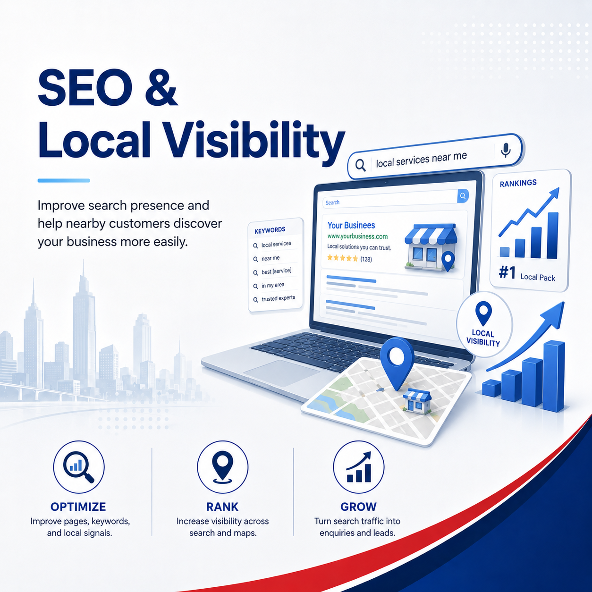

Can Google crawl the website?
We review robots.txt, sitemap, canonical tags, page status, redirects and whether pages are indexable.
A website can look fine but still fail to appear for the right searches. Axon checks whether Google can find, understand and trust your pages, then improves the structure for SEO, GEO and AEO.

We review robots.txt, sitemap, canonical tags, page status, redirects and whether pages are indexable.
We check Google Search Console, sitemap submission, indexing errors, page experience and search queries.
We improve page titles, H1s, descriptions, service explanations, FAQs and internal links.
We structure pages for Google AI answers, ChatGPT-style discovery, GEO and AEO readiness.
The page must be crawlable, useful, specific, internally linked and clear enough for both humans and AI systems to understand.